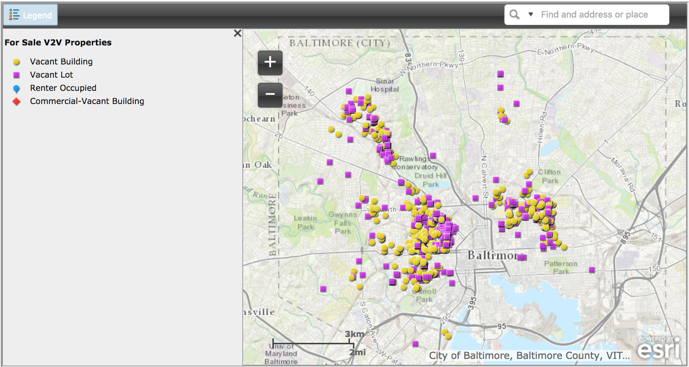

An Analysis of Vacant Buildings in Baltimore City
This is an informational visualization of data regarding vacancies in Baltimore city. This page has been generated using ChartJS, PleaseJS, JavaScript, HTML, SCSS, and the Socrata Open Data API (SODA). The accuracy of the data presented below relies upon the accuracy of the dataset provided by OpenBaltimore, which aggregates data from the Housing Authority of Baltimore City. Whenever this particular data set is updated, these graphs will update accordingly. The analysis text was last updated .
Data Bugfix: As of , there is a typo in the dataset's Police Districts column. An additional value of "Notheastern" is saved in this column, which ends up skewing the data so that it looks like the actual NorthEastern police district has little-to-no vacants. I have added a fix in my JavaScript to correctly combine and output the data for the Northeastern district.
A Visualization of Vacancies By Regional and Political Boundaries
Reference Maps:
Analysis:
Immediately, we can see clear outliers in the data. The top five results are: Broadway East (1210 vacants), Sandtown-Winchester (811 vacants), Harlem Park (718 vacants), Carrollton Ridge (730 vacants), and Central Park Heights (659 vacants). The neighborhoods with the lowest recorded number of vacants are barely visible in this graph due to the huge discrepancy between various neighborhoods. Just goes to show how divided a tiny city like Baltimore truly is.
Neighborhoods with the Highest Reported Number of Vacancies
The neighborhood with the absolute highest recorded number of vacancies is Broadway East (Wikipedia, View on Google Maps). At the time of this writing, there are 1210 recorded vacancies in this neighborhood. This exceeds the next highest neighborhood, Sandtown-Winchester, by 399 additional buildings. All vacants are contained within an area of 0.342 sq miles1, or around 219 acres. There is a recorded population of 7,437 people living in this neighborhood, so the calculated population density is roughly 21,737 per sq mile. It is a densly populated area compared to Baltimore's general density, which hovers around 7,696 people per sq mile. The percentage of people living below the poverty line is 32.4%, far exceeding the city's average of 22.9%. The median income in 2015 was reported to be $32,537.1
The next neighborhood with the highest recorded number of vacancies is Sandtown-Winchester (Wikipedia, View on Google Maps), a place that used to be known as Baltimore's Harlem, most recently known as the neighborhood where in 2015 Freddie Gray was arrested and eventually died for the possession of a small pocket knife.2 This knife is one that is sold commonly throughout the city and suburbs, and is carried by many individuals in the city, with a 3-inch long blade, a seat-belt cutter, and a glass breaker.3 I have a knife that looks exactly like this from Home Depot. Many people own and carry similar knives.
Sandtown-Winchester encompasses an area of 0.406 square miles (or around 260 acres).4 It is reported to have a population of around 9,802, which sets its population density at almost 24,157 people per sq mile surpassing Broadway East. A reported 39.6% of people in this neighborhood live below poverty level, again surpassing Broadway East. The median income in 2015 was $29,765.4
Harlem Park (View on Google Maps) is our third highest result. It contains a population of about 6,000 people within a square mileage of 0.312 (or around 200 acres).5 The population density is 19,205 people per sq mile, which is lower than both Sandtown and Broadway East. The reported median income in 2015 is also lower than the other 2 neighborhoods at $25,162 a year. 40% live below poverty level, the lowest of all three neighborhoods.5
Here is a table with some data for ease of use:
| Metrics | Broadway East | Sandtown‑Winchester | Harlem Park | Carrollton Ridge | Central Park Heights |
|---|---|---|---|---|---|
| Number of Reported Vacants | 1210 vacants | 811 vacants | 718 vacants | 730 vacants | 659 vacants |
| Council District | District 13 | District 7 | District 9 | District 9 | District 6 |
| Police District | Eastern District | Western District | Western District | Southwestern District | Northwestern District |
| Area (in mi2) | 0.342 mi2 | 0.406 mi2 | 0.312 mi2 | 0.226 mi2 | 0.442 mi2 |
| Population | 7,437 | 9,802 | 6,000 | 4,500 | 6,654 |
| Population Density | 21,737 ppl per mi2 | 24,157 ppl per mi2 | 19,205 ppl per mi2 | 19,879 ppl per mi2 | 15,061 ppl per mi2 |
| Population Below Poverty (city average: 22.9%) | 32.4% | 39.6% | 40.0% | 43.9% | 34.7% |
| Median Income in 2015 | $32,537/yr | $29,765/yr | $25,162/yr | $19,879/yr | $31,376/yr |
- Average Area: 0.346 mi2
- Average Population: 6879
- Average Population Density: 20,008 ppl per mi2
- Average Percentage Below Poverty: 38.12%
- Average Median Income: $27,744
Neighborhoods with the Lowest Reported Number of Vacancies
Let's look at the neighborhoods with the lowest recorded number of vacancies. At the time of this writing, , there is a tie between 13 neighborhoods— Barre Circle, Evesham Park, Forest Park Golf Course, the Jones Falls Area, Heritage Crossing, Hoes Heights, Homeland, Oaklee, Orangeville Industrial Area, Penn-Fallsway, Radnor-Winston, Roland Park, and Wyman Park— all of which have a recorded number of only 1 vacant. I am genuinely surprised to see certain neighborhoods in this list, so let's investigate to see what some common demoninators might be. We are assuming that a lack of reporting, or lack of available information, is not skewing the data.
For brevity, I have compiled the table below:
| Metrics | Barre Circle | Evesham Park | Forest Park Golf Course | Jones Falls Area | Heritage Crossing | Hoes Heights | Homeland | Oaklee | Orangeville Industrial Area | Penn‑Fallsway | Radnor‑Winston | Roland Park | Wyman Park |
|---|---|---|---|---|---|---|---|---|---|---|---|---|---|
| Number of Reported Vacants | 1 vacant | 1 vacant | 1 vacant | 1 vacant | 1 vacant | 1 vacant | 1 vacant | 1 vacant | 1 vacant | 1 vacant | 1 vacant | 1 vacant | 1 vacant |
| Council District | District 10 | District 4 | District 8 | District 7 | District 11 | District 14 | District 4 | District 10 | District 13 | District 12 | District 4 | District 7 | District 14 |
| Police District | Southern District | Northern District | Northwestern District | Northern District | Western District | Northern District | Northern District | Southwestern District | Southeastern District | Eastern District | Northern District | Northern District | Northern District |
| Area (in mi2) | 0.022 mi2 | 0.072 mi2 | 0.237 mi2 | 0.298 mi2 | 0.083 mi2 | 0.079 mi2 | 0.0612 mi2 | 0.043 mi2 | 0.439 mi2 | 0.140 mi2 | 0.078 mi2 | 0.941 mi2 | 0.106 mi2 |
| Population | 362 | 487 | 2,649 | 1,575 | 1,288 | 821 | 3,153 | 101 | 539 | 15,940 | 679 | 4,888 | 1,737 |
| Population Density | 16,102 ppl per mi2 | 6,759 ppl per mi2 | 11,161 ppl per mi2 | 5,287 ppl per mi2 | 15,520 ppl per mi2 | 10,378 ppl per mi2 | 5,150 ppl per mi2 | 2,329 ppl per mi2 | 1,228 ppl per mi2 | 114,055 ppl per mi2 | 8,662 ppl per mi2 | 5,195 ppl per mi2 | 16,362 ppl per mi2 |
| Population Below Poverty (city average: 22.9%) | 30.8% | 6.3% | 24.4% | 18.3% | 44.2% | 6.4% | 6.0% | 18.5% | 31.1% | 42.5% | 24.4% | 8.5% | 7.9% |
| Median Income in 2015 | $55,041/yr | $90,794/yr | $47,850/yr | $65,808/yr | $19,417/yr | $64,971/yr | $119,974/yr | $51,769/yr | $33,218/yr | $42,975/yr | $40,232/yr | $114,052/yr | $69,147/yr |
- Average Area: 0.199 mi2
- Average Population: 2632
- Average Population Density: 16,784 ppl per mi2
- Average Percentage Below Poverty: 20.7%
- Average Median Income: $62,7111
Although these neighborhoods have some outliers in income, poverty level, and population density, generally speaking these neighborhoods have a smaller population in a much smaller area. On average, the median income level is $62,711 a year. The average percentage of those living below poverty is 20.7%. Compare this to the average median income level of the neighborhoods that had higher numbers of vacants— $27,744. There is a clear correlation between poverty and vacant buildings. These are areas that the city has forgotten, or has deliberately neglected in favor of building up other neighborhoods.
The neighborhoods mostly skew towards being in the Northern district which is a fairly rich area, nestled right in Baltimore's White L (traverses up I‑83). In comparison, the neighborhoods that scored as having the highest number of vacant buildings were located in the Black Butterfly.
The terms "White L" and "Black Butterfly" are often used to describe Baltimore's highly segregated neighborhoods. This disparity developed as a result of redlining during the Jim Crow era as a means to further segregate the city.6 Redlining is the practice of denying services to people based on the racial composition of their neighborhood. Often this meant denying bank loans or housing in order to keep people from entering new communities or leaving their own. This could also mean something as basic as refusing to build or stock grocery stores or retail stores, refusing easy access to public transportation, or simply allowing infrastructure to crumble in "less desirable" areas. These detrimental, discriminatory practices have made lasting effects into modern day and can be easily seen in the differences between neighborhoods. Institutionalized advantages and disadvantages are briefly listed in this chart below:7
Looking back at the graph at the top of the page, sorting the data by Police District and by Council District reveals that the areas that have the highest number of vacant buildings also fall into the "Black Butterfly" regional area.
One very, very glaring example of different treatment is the Baltimore Police Department's treatment of people who did not abide by the curfew during the 2015 Baltimore Protests. On April 28, 2015, a mandatory curfew was declared in the city of Baltimore.8 Residents were ordered to go home and stay home after 10:00pm. There were many protests and subsequently arrests. However, many residents who lived in areas such as Canton, Hampden, or Remington shared stories about how they were "chilling outside, drinking beers" past the 10pm curfew. Police response was little to none.
Vacants to Value Map of Properties Available for Sale
Vacants to Value (V2V) is a Baltimore housing initiative that gives potential home buyers or developers grants and tax breaks as an incentive to invest and rehab vacant properties and lots in Baltimore. The website provides an interactive map that displays the location of V2V properties for sale.8 Below is a snapshot of the map, taken on March 15, 2017. The Purple Squares are vacant lots, and Yellow Circles are vacant buildings.
An overview of this map very apparently shows the L and Butterfly. You can explore the map yourself at http://www.vacantstovalue.org/Explore.aspx#propmap and zoom into specific areas for more details.
My Thoughts and Experiences
In the time that I have lived here in this conflicted city, I have witnessed vast differences in public services between neighborhoods. I have watched as police rush to respond to a distress call in Locust Point and remain posted for days after, while taking close to 45 minutes to show up when a fatal shooting occurs in a residential Pigtown street. I can only imagine the response time in neighborhoods that are located further away from the insulated L. I have seen the complete lack of fresh produce (and an increase in fried, high in saturated fats, trans fats, generally unhealthy "instant" foods) sold in lower-income neighborhoods. In order to get access to a supermarket with fresh produce, a person often has to travel outside of their neighborhood, a feat that could be nearly impossible if that person is without a vehicle or access to public transportation.
I have watched many, many start-ups in Baltimore engage in discriminatory hiring. These are companies that exist to boost and revitalize the city's economy, but are only serving to uplift people of a certain type and demographic. This mirrors many of the same practices enforced historically and still to this day that continue to deepen the divide amongst the population in the city. These companies, whether intentionally or by ignorant mistake, continue to perpetuate the "us versus scary them" mentality that segregates this city.
This has only strengthened my resolve that we must fight harder to bring attention to inequality, to wake people up and force them to take a step back and observe, and more importantly create positive actions and legislation to curb these negative snowballing effects.